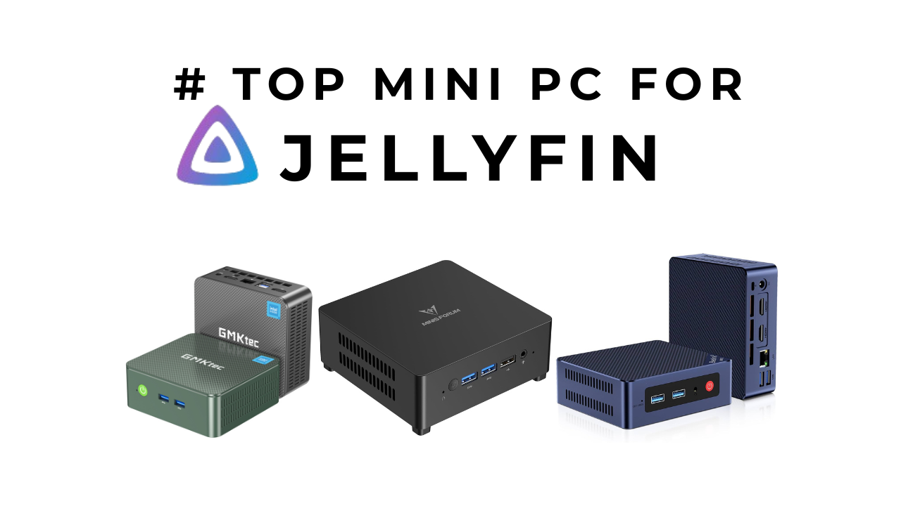

If you are reading this, you are probably tired of paying for Netflix, Hulu, or Google Photos. You've likely heard about Jellyfin—the amazing, free media server that lets you own your movies and shows.
But here is the problem: You need a computer to run it 24/7.
You might be thinking about using an old laptop or a Raspberry Pi. Don't do it. A Raspberry Pi 5 costs nearly $100 once you buy the case and power supply, and it struggles to "transcode" (convert) high-quality 4K movies.
The solution? A Mini PC with an Intel Processor.
In 2026, you can get a tiny computer that is faster than a Pi, uses almost zero electricity, and handles multiple 4K streams flawlessly—all for under $180.
Here is the ultimate guide to the best Mini PCs for your Jellyfin server.
What is "Intel Quick Sync" and Why Do You Need It?
To understand why, you first need to understand the hardest job your server does: Transcoding.
What is Transcoding?
Imagine you have a high-quality 4K movie stored on your server.
Scenario A: You play it on your expensive 4K TV. The TV understands the file format. The server just sends the file. This is called "Direct Play." It uses almost zero CPU power.
Scenario B: You try to watch that same 4K movie on your iPhone while riding the bus, or on an old 1080p TV. Your phone can't play the massive 4K file.
This is where Transcoding happens. Your server must instantly "crush" that massive 4K movie into a smaller 1080p format that your phone can understand. It has to do this live, frame-by-frame, while you watch.
This process is incredibly heavy. If you ask a regular CPU to do this, it will hit 100% usage, your fans will scream, and the video will stutter.
Enter Intel Quick Sync Video (QSV)
Intel chips have a tiny, dedicated physical section on the silicon chip solely for handling video. This is Quick Sync.
When Jellyfin needs to transcode a movie:
- The main Intel CPU says, "I'm busy running Windows/Linux. Hey Quick Sync, handle this video."
- The Quick Sync core wakes up, crushes the video instantly, and sends it to your phone.
- The main CPU stays asleep (under 5% usage).
- The fan stays silent.
The Great Encoder Showdown: Intel vs. AMD vs. NVIDIA
Why not use a powerful Gaming PC with an NVIDIA card? Or a Ryzen chip? Here is the comparison for 2026:
| Feature | Intel Quick Sync | NVIDIA NVENC | AMD AMF |
|---|---|---|---|
| Efficiency | ⭐⭐⭐⭐⭐ Best | ⭐⭐⭐ Good (Power Hungry) | ⭐⭐ Weak |
| Cost | ⭐⭐⭐⭐⭐ $150–$180 | ⭐⭐ $500+ (RTX card) | ⭐⭐⭐ $200–$300 |
| 4K Support | ⭐⭐⭐⭐⭐ Native | ⭐⭐⭐⭐ Available | ⭐⭐⭐ Patchy |
| For Home Server? | ⭐⭐⭐⭐⭐ Perfect | ⭐⭐ Overkill | ⭐ Avoid |
The Top 5 Mini PCs for Jellyfin in 2026
1. Beelink S12 Pro (The Overall Winner)
Best For : The "I just want it to work" user.
The Beelink S12 Pro is the most popular home server for a reason. It strikes the perfect balance between price, build quality, and silent operation. It includes a 2.5-inch SATA slot, meaning you can add a cheap 2TB HDD inside specifically for your movies.
Why for Jellyfin? The extra 2.5" slot means you can store your movies directly inside the box without needing external USB drives.
2. GMKtec NucBox G3 (The Budget Choice)
Best For : Students and budget hunters.
This is functionally identical to the Beelink S12 Pro but comes in a cheaper plastic shell. If you are going to hide your server in a cupboard, save the $30 and get this. Note that the fan can be slightly audible under heavy transcoding loads.
Why for Jellyfin? It has a 2.5GbE LAN port. If you have a modern router, your file transfers (uploading movies to the server) will be 2.5x faster than on the Beelink.
3. Minisforum UN100D (The Network Pro)
Best For : Users who also want to run a Router/Firewall (pfSense).
The UN100D is unique because it can be powered via USB-C (so you can use a phone charger) and has Dual LAN ports. This allows you to use it as a router AND a Jellyfin server simultaneously.
Why for Jellyfin? LPDDR5 RAM is faster than the DDR4 in the Beelink, making the UI slightly snappier when loading heavy metadata/posters.
4. Chuwi LarkBox X (The Aesthetic Pick)
Best For : People putting the server on a desk.
Most mini PCs are boring black boxes. The LarkBox X is usually white/silver and looks like a premium audio accessory. It uses LPDDR5 RAM which is faster, but be careful—it is soldered, so you cannot upgrade it later.
Why for Jellyfin? The 12GB RAM is a "sweet spot." It's more than the basic 8GB, allowing you to create a RAM-Disk for transcoding (saving wear and tear on your SSD).
5. Trigkey Green G5 (The Beelink Clone)
Best For : Deal hunters.
Trigkey is effectively a sister brand to Beelink. The internal motherboards are often identical. The Green G5 is frequently on "Flash Sale" on Amazon for $10–$20 less than the Beelink S12 Pro.
Why for Jellyfin? It's the cheapest way to get the "Beelink experience." If the S12 Pro is out of stock or expensive, buy this.
Specs Comparison
| Model | CPU | RAM Type | 2.5" Drive Slot? | LAN Speed | Best For... |
|---|---|---|---|---|---|
| Beelink S12 Pro | N100 | DDR4 (Slot) | ✅ Yes | 1 Gbps | Reliability |
| GMKtec G3 | N100 | DDR4 | ❌ No | 2.5 Gbps | Budget / Speed |
| Minisforum UN100D | N100 | LPDDR5 (Soldered) | ✅ Yes | Dual 2.5 Gbps | Networking |
| Chuwi LarkBox X | N100 | LPDDR5 (Soldered) | ❌ No | Dual 1 Gbps | Design |
| Trigkey Green G5 | N100 | DDR4/5 | ✅ Yes | 2.5 Gbps | Backup Choice |
Quick Setup Guide: How to Start
Once your Mini PC arrives, don't keep Windows on it. Windows uses too much RAM.
- Download "Ubuntu Server" or "Debian" (It's free).
- Flash it to a USB stick using a tool called BalenaEtcher.
- Install Docker. (This sounds scary, but it's just one command line).
- Install Jellyfin.
People Also Ask (FAQ)
Common questions about building a Jellyfin media server in 2026.
Why is the Intel N100 considered the best budget choice for Jellyfin in 2026?
+The Intel N100 is the "gold standard" because it includes the Intel Quick Sync video engine. For under $160, it can handle multiple simultaneous 4K HDR transcodes while consuming less than 15W of power.
Can a Mini PC handle 4K HDR tone-mapping in Jellyfin?
+Yes, provided it has an Intel CPU with integrated UHD graphics (Gen 12/Xe architecture or newer). Models like the N100 or N150 can perform hardware-accelerated HDR-to-SDR tone-mapping flawlessly.
Do I need 16GB of RAM for a dedicated Jellyfin server?
+While 8GB is sufficient for basic Linux streaming, 16GB is highly recommended if you run Windows 11 or use Docker containers like Sonarr and Radarr. It also allows for a RAM-Disk to save SSD wear.
Why is my Jellyfin server buffering/stuttering on an Intel N100?
+If your N100 is hitting 100% CPU usage, Hardware Acceleration is likely disabled. You must enable "Intel QSV" in the Jellyfin Playback settings, otherwise, the server uses software transcoding which is too heavy for the CPU.
Want a full step-by-step tutorial on the installation? Let me know in the comments below!
Recommendations
Building a home media server is the best way to take back control of your data in 2026.
- Buy the Beelink S12 Pro if you want a machine that "just works" and looks good.
- Buy the GMKtec G3 if you want the best performance-per-dollar ratio.